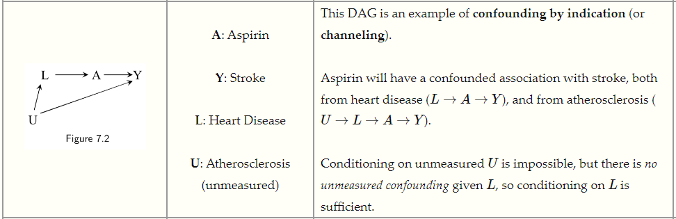
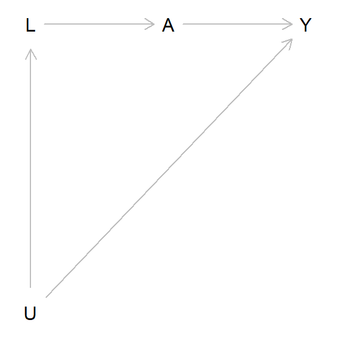
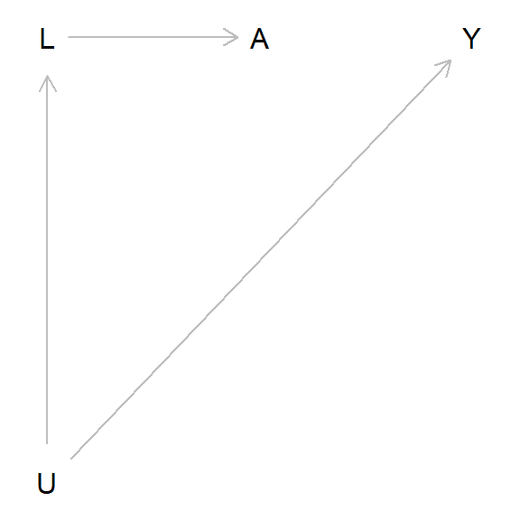
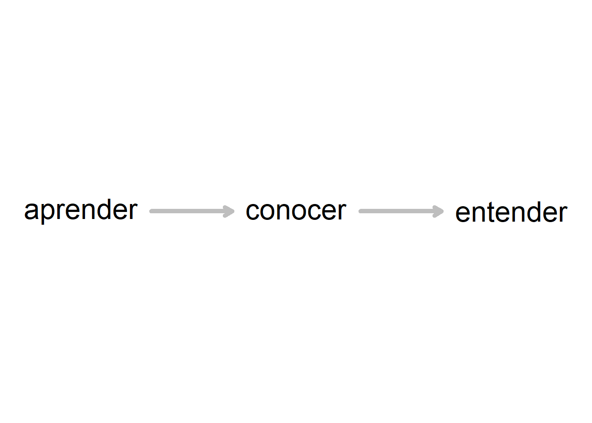
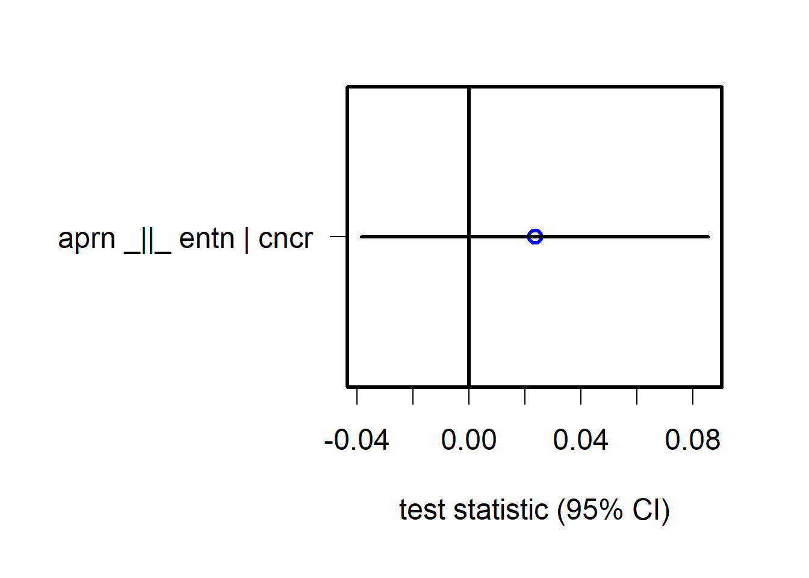

Judea Pearl se ha aproximado a la causalidad desde una perspectiva matemática y computacional. En ese camino retomó y dio un nuevo impulso a los llamados modelos probabilísticos gráficos en su variante de redes Bayesianas. También ha incursionado en los llamados modelos de ecuaciones estructuradas, también de la familia de los modelos gráficos. Todo ello vinculado con los Gráfos Acíclicos Dirigidos, a los que llamaremos DAG (del inglés directed acyclic graphs). Pearl y colaboradores así como otros investigadores ahora, han venido desarrollando la teoría que nos permite analizar tales DAGs para comprender los patrones de dependencia causal así como los de correlación que implica una proposición causal dada. En esta contribución buscamos mostrarles algunos elementos interesantes de esto y con ello, animarlos a estudiar estas ideas con mayor profundidad.

Haz click sobre la imágen para ver la presentación
Dudas sobre puerta trasera
La cuestión que se nos complicó más en la clase de hoy fue el asunto de la puerta trasera. Aquí retomo el tema alrededor de la pregunta sobre aspirina en la que nos atoramos.
Para referencia esta son la pregunta y DAG asociados:

Los autores de este ejemplo, Hernan & Robins explican lo siguiente:

Confusión por indicación o prescripción
El contexto de este DAG se relaciona con la práctica farmacoepidemiológica al realizar estudios observacionales del efecto de los medicamentos, con protocolos en los que se comparan los resultados de personas que toman medicamentos específicos contra los de personas que no los toman (aunque pueden, por ejemplo, tomar otro tipo de medicación). En estos estudios, los participantes o sus médicos eligen si van a tomar o no los medicamentos. Por tanto, la asignación del tratamiento dista mucho de ser aleatoria. Se suelen hacer como seguimiento una vez liberado un fármaco en el mercado. La confusión por indicación es un sesgo que se encuentra con frecuencia en estos estudios observacionales farmacoepidemiológicos de los efectos de los fármacos.
Para obtener más ayuda, les recomendamos acercarse a dagitty, que es un sitio de aprendizaje y uso de DAGs. Ahí hay una herramienta de dibujo de DAGs y permite explorar opciones para el diseño de estudios y recibir consejos sobre la calidad de la estimación que distintos enfoques de diseño pueden ofrecer. Esta herramienta también está disponible como una biblioteca para R. Con esta herramienta produjimos este resultado.

Simulador computacional para aprender
Construyamos un conjunto de datos artificial que tenga las propiedades que especifica el DAG. Que sean, digamos, 1000 pacientes tomados aleatoriamente de la comunidad en nuestro vecindario.
Ahora, Cada uno de ellos puede estar afectado, en forma continua, por la arteriosclerosis, U, aunque en el ejemplo esto no es observable, pero el paciente sí tiene ese efecto encima. Lo representaremos con números que pueden ser negativos o positivos, digamos que en cero el paciente está normalmente sano, por abajo mejor salud (en cuanto a este mal) y por arria de cero tiene mayor grado del padecimiento. Para no complicarnos podemos elegir razonablemente que estos números se parezcan a una distribución normal.
Algo semejante ocurre con la enfermedad cardíaca, L, salvo que la agrava la presciencia de arteriosclerosis en el paciente. Digamos que la enfermedad cardíaca puede ser cero (la condición que tiene un paciente normal), menor que cero entre más sano más pequeño este valor) y los valores positivos indica que está enfermo. Además, el mal se agrava añadiendo 10 veces el grado de arteriosclerosis que padezca el paciente. Todo esto, nos lleva a estas líneas de cálculo.
Un poquito más complicado es el factor aspirina, A. Se trata de un tratamiento que el paciente recibe o no, según su condición también lo que le haya indicado el médico. Es una variable categórica. Hay varias formas de hacerlo, pero les muestro aquí un camino que pienso es más fácil de seguir para un lector sin experiencia computacional.
Primero, considero que entre los 1000 pacientes algunos ya toman aspirina y otros no. La función sample de R toma muestras aleatorias de una colección de números o palabras que le demos,
Ahora, a todos los pacientes que sean detectados con enfermedad cardíaca se les indica tomar aspirina y supondremos que todos ellos la tomarán.
Finalmente, calculamos la respuesta de los pacientes al tratamiento y a los padecimientos que lo afectan y ponemos todos los datos en una tabla, es decir un “data.frame” de tipo modernizado llamado “tibble” cuyas funcionalidad se carga con la bibliotteca “dplyr”.
El modelo ideal es por lo tanto:
\[ Y = -2 A + U \]
Situación erronea, no se controló el factor de confusión enfermedad cardíaca
Situación apropiada, control de factor de confusión por enfermedad cardíaca
Con este procedimiento cierro la puerta trasera y logro estimar el efecto de la aspirina sin confusión.
Situación imposile en la práctica, control de factor de confusión por enfermedad cardíaca y documentación de una variable no observada.
Usar dagitty para probar las implicaciones del DAG propuesto.
Para animarlos a sacar provecho de la capacidad de formular y analizar DAGs en R anoto a continuación algunas líneas a manera de ejemplo, tomando el caso de la aspirina.
Para construir el DAG hago lo siguiente. Puse algo de definición de variables que permite hacer muchas cosas, incluso doy datos sobre ubicación, pos, para que el DAG se pinte como yo quiero.
library(dagitty)
aspirina_dag <- dagitty('dag{A[exposure, pos="1, 0"]
Y[outcome, pos="2, 0"]
U[unobserved, pos="0, 1"]
L[selected, pos="0, 0"]
U -> L;
U -> Y;
L -> A;
A -> Y}')
plot(aspirina_dag)
ahora averiguo que condiciones de independencia implica este grafo. Para hacerlo sin restricciones usaré un DAG sin información sobre las características de las variables.
asp_dag <- dagitty('dag{U -> L; U -> Y; L -> A; A -> Y}')
impliedConditionalIndependencies(asp_dag)A _||_ U | L
L _||_ Y | A, USi tengo datos, puedo poner a prueba la correspondencia del DAG con lo observado. Me parece que no le gustan los tibble a esta función
localTests(asp_dag, as.data.frame(datos_aspirina), "cis.pillai") estimate p.value 2.5% 97.5%
A _||_ U | L -0.01643180 0.6037579 -0.07834507 0.04560775
L _||_ Y | A, U -0.01949504 0.5380431 -0.08138976 0.04254946Si quiero aprovechar la caracterización de las variables puedo hacer cosas como dibujar el subgrafo que corresponde con la puerta trasera
plot(backDoorGraph(aspirina_dag))
¿Qué tengo que controlar para tener una estimación adecuada del efecto directo de A en Y?
tabla_dag <- tibble(Tratamiento=exposures(aspirina_dag),
Respuesta = outcomes(aspirina_dag),
Covariable_a_controlar = as.character(adjustmentSets(aspirina_dag,
effect = "direct" )))
library(flextable)
library(tidyr)
library(stringr)
tabla_dag %>%
pivot_longer(cols = 1:3, names_to = "Tipo de variable", values_to = "Variable") %>%
mutate(`Tipo de variable`=str_replace_all(`Tipo de variable`, "_", " ")) %>%
flextable() %>%
flextable::width(j = 1, width = 2) Tipo de variable | Variable |
|---|---|
Tratamiento | A |
Respuesta | Y |
Covariable a controlar | L |
Los DAG y modelos estadísticos
\(\newcommand{\ci}{\perp\!\!\!\perp\!\!\!~~~}\)
:format(.JPG)/f.elconfidencial.com/original/576/350/da1/576350da1a73890bf7e9710e9f63c5fe.jpg)
Lübkea K, et. al (2020). nos ofrecen el artículo Why We Should Teach Causal Inference: Examples in Linear Regression With Simulated Data. La propuesta es atractiva y vamos a ensayar hacerlo. Esta publicación, dicen los propios autores, surge de que desde hace ya algunos años se ha venido señalando la importancia de propiciar la integración de la inferencia causal (DAGs y similares) en los cursos introductorios de estadística. Judea Pearl llama a este enfoque la “revolución causal”. Con su obra El libro del Porqué ha logrado incrementar el interés en hacer esta fusión en la enseñanza de la estadística.
 La influencia de este modo de pensar es tal que está provocando incluso que algunas revistas se interesen en generar guias de uso de estas ideas, por ejemplo: Control of Confounding and Reporting of Results 1n Causal Inference Studies Guidance for Authors…. En gran parte, la tradición de experimentos aleatorizados ofrece una sólida herramienta para estudiar relaciones causales. El problema, es que hay muchas disciplinas y más situaciones, en donde el enfoque de experimentos aleatorizados es inviable.
La influencia de este modo de pensar es tal que está provocando incluso que algunas revistas se interesen en generar guias de uso de estas ideas, por ejemplo: Control of Confounding and Reporting of Results 1n Causal Inference Studies Guidance for Authors…. En gran parte, la tradición de experimentos aleatorizados ofrece una sólida herramienta para estudiar relaciones causales. El problema, es que hay muchas disciplinas y más situaciones, en donde el enfoque de experimentos aleatorizados es inviable.
El hecho es que los datos observacionales son una proporción abrumadora de la materia prima para la investigación empírica. Por lo tanto es necesario que, además de adquirir las destrezas que los experimentos aleatorizado requieren, también deben aprender a pensar en una forma más amplia acerca del proceso a través del cual se generan los datos. Esto es indispensable para fortalecer habilidades críticas necesarias para estar en posibilidad de extraer conclusiones adecuadas a partir de ellos.
Un tema importante es comprender que en la inferencia causal, además de la habilidad para observar y operar con los datos, la evaluación contrafáctica es necesaria para lograr una comprensión más profunda de lo que se puede y quizás aún más importante, lo que no se puede deducir del análisis de un conjunto de datos.
En la siguiente sección vamos a seguir este camino con uno de los ejemplos que nos proponen Lübkea K, et. al (2020).
Vivimos en un mundo pleno de datos observacionales multivariados. Se trata de datos en lo que también abundan los procesos que pueden generar confusión (en el sentido estadístico, además del cognitivo), y se tiene importantes dificultades para llegar a conclusiones.
Ejemplo: Efectos de sesgo en las causas
El ejemplo de simulación que haremos ahora parte de la proposición causal:
- El aprendizaje (X) tiene como efecto el conocimiento (C), y conocer provoca la comprensión (Y),
Además actúan algunos factores exógenos (U, son el término de error en el modelo estadístico). En la vida real, el aprendizaje, el conocimiento y la comprensión pueden ser operacionalizados por algún cuestionario y estandarizados para dar la precisión necesaria al análisis.
El ejemplo consiste ahora en producir un conjunto de datos que cumpla, por diseño, con la descripción que acabo de hacer. En este caso utilizaremos las ecuaciones siguientes.
\[ \begin{align} X &= U_{X}, \, U_{X} \sim N(0, 1) \\ C &= 5 X + U_{C}, \, U_{C} \sim N(0, 1) \\ Y &= 3 C + U_{Y}, \, U_{Y} \sim N(0, 1) \end{align} \]
en donde N(μ, σ) indica que existen variaciones por causas no observadas que vamos a suponer generan oscilaciones aleatorias o un ruido, cuya distribución es semejante a la que produciría una distribución Normal de probabilidades. Ahora escribimos estas ecuaciones en un escript de R.
set.seed(1896) # Si interesa repetir la misma secuencia de numeros aleatorios. Habilita Repetibilidad
n <- 1000 # Sample Size
aprender <- rnorm(n)
conocer <- 5 * aprender + rnorm(n) # Conocer depende del comportamiento de aprender
entender <- 3 * conocer + rnorm(n) # entender depende del comportamiento de conocer
# Para comodidad de cálculo junto los datos en una tabla, un "data.frame"
datos <- data.frame(aprender, conocer, entender)El DAG que describe la situación descrita lo podemos producir en R con ayuda de la biblioteca DAGitty. Con las instrucciones siguentes.
library(dagitty)
ejemplo_1_DAG <- dagitty('dag{
aprender -> conocer
conocer -> entender
aprender[exposure, pos="0,0"]
conocer[pos="1,0"]
entender[outcome, pos="2,0"]}')
options(repr.plot.width=10, repr.plot.height=3)
par(cex=2, lwd = 5)
plot(ejemplo_1_DAG)
Si optamos por no “corregir” la estimación por el efecto del mediador, Supondríamos que el efecto total del aprendizaje sobre el entendimiento no tiene sesgo. La estimación de esta relación la obtenemos con el modelo que calculamos en ejemplo_1_ecuación_1.
ejemplo_1_ecuacion_1 <- lm(entender ~ aprender)
summary(ejemplo_1_ecuacion_1)$coefficients[,1:2] Estimate Std. Error
(Intercept) -0.02227676 0.09661146
aprender 15.12087585 0.09781602¿Qué piensas de este resultado? ¿El modelo es congruente con la proposición causal? Si ahora optamos por sí “corregir” los efectos considerando que el conocimiento puede estar interfiriendo la estimación del efecto total del aprendizaje sobre el entendimiento. Ahora, el modelo que da cuenta de esta nueva situación es el que calculamos en ejemplo_1_ecuación_2.
ejemplo_1_ecuacion_2 <- lm(entender ~ aprender + conocer)
summary(ejemplo_1_ecuacion_2)$coefficients[,1:2] Estimate Std. Error
(Intercept) -0.004947807 0.03077153
aprender 0.121514701 0.16253665
conocer 2.981736249 0.03171170Los resultados de esta exploración produce dos ecuaciones:
\[ \begin{align} X &= U_{X}, \, U_{X} \sim N(0, 1) \\ C &= 5 X + U_{C}, \, U_{C} \sim N(0, 1) \\ Y &= 3 C + U_{Y}, \, U_{Y} \sim N(0, 1) \end{align} \]
\[ \begin{align} entender &= -0.022 + 15.12 \, aprender + \varepsilon \\ entender &= -0.005 + 0.122 \, aprender + 2.98 \, conocer + \varepsilon \end{align} \]
¿Puedes explicar qué pasó aquí?
¿Qué relación tiene esto con lo que cabría esperar de acuerdo con as reglas de la “separación direccional”?
¿Qué sugieren los datos del ajuste del modelo estadístico
lm?¿Tienen relevancia el aprendizaje y el conocimiento?
¿Cuál es el modelo adecuado dada la proposición causal considerada?
Podemos utilizar a dagitty para explorar el DAG directamente de la siguiente manera. Podemos preguntarnos cuales serían las formas de separar el grafo con criterios de independencia condicional. Se trata de aplicar las tres reglas de separación direccional al grafo. Afortunadamente dagitty lo puede hacer por nosotros.
impliedConditionalIndependencies(ejemplo_1_DAG)aprn _||_ entn | cncr¿Qué indica este resultado?
\[ aprender \,\, \ci \,\, entender \,\, | \,\, conocer \]
Además de hacer esto por nosotros, la biblioteca dagitty nos permite poner a prueba la correspondencia de los datos con estas ideas. Lo hacemos con la función localTests.
La función localTests calcula el coeficiente de correlación de Pearson para cada condición considerada. El resultado incluye el valor p y el intervalo de confianza del coeficiente de correlación para cada una de las relaciones de independencias condicionales implicadas por la estructura del modelo.
El coeficiente de correlación de Pearson varía entre -1 y 1. El valor 0 implica que no hay correlación, mientras que -1 o 1 implica una correlación lineal perfecta.
El valor p de la prueba indica la probabilidad de obtener un conjunto de datos como el que se tiene, asumiendo la hipótesis de que la condición de independencia correspondiente es verdadera.
Por lo tanto, un coeficiente de correlación cercano a 0 con un valor p alto es sugerente de que la independencia condicional indicada es congruente con el patrón detectable en los datos.
Por el contrario, un valor alto del coeficiente de correlación con un valor p bajo sugiere que la independencia condicional considerada no es congruente con el conjunto de datos.
Las columnas etiquetadas com 2.5% y 97,5% contienen el intervalo de confianza del 95% para el coeficiente de correlación.
Cuanto más estrecho sea el intervalo de confianza y alejado de cero resulte, más fuerte será la evidencia de que la independencia condicional que implica el DAG no se mantiene en el conjunto de datos disponible para el ensayo.
# El tipo de análisis "cis" usa regresión lineal para poner a prueba la correlación
ejemplo_1_analisis_DAG <- localTests(x=ejemplo_1_DAG, data=datos, type="cis")
print(ejemplo_1_analisis_DAG) estimate p.value 2.5% 97.5%
aprn _||_ entn | cncr 0.02367054 0.4549614 -0.03840997 0.08556934Si lo preferimos, podemos obtener una representación gráfica de estos resultados.
options(repr.plot.width=14, repr.plot.height=5)
par(cex=1.5, lwd = 3, oma = c(1,2,1,1), mar = (c(4,2,1,1) + 0.5))
plotLocalTestResults(ejemplo_1_analisis_DAG, col = "blue")